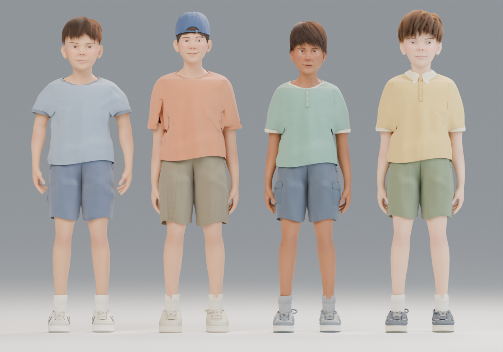
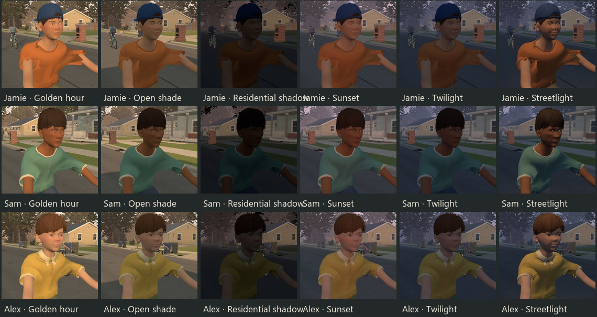
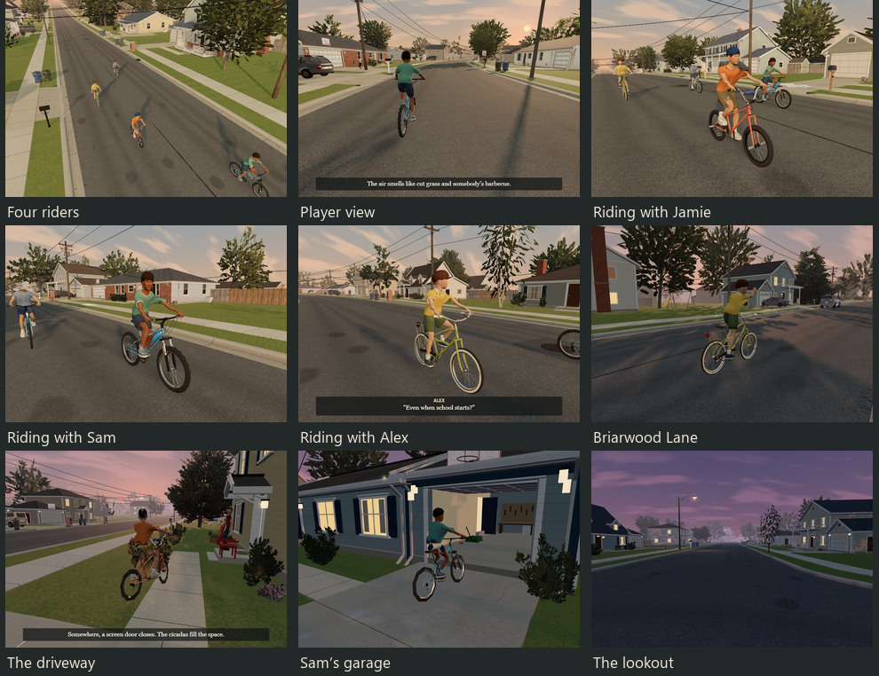

Last Light
Four-friend Prologue · Phase 1B visual and motion review
Oak Hollow ride
Captured from the running game with all eight benchmark options. The first-person film follows a single ride from the opening to the Chapter One handoff. The observer cameras follow the same departures.
Complete Prologue · first-person
Four riders · observer camera
Alongside the friends
Alex · Briarwood Lane
Jamie · driveway and front door
Sam · garage and walk inside
Same-scale Blender lineup
From left to right, the protagonist, Jamie, Sam and Alex.

Oak Hollow lighting study
Each column uses the same lighting setup for all three friends. These controlled portraits use the game renderer’s photographic lighting controls.

Frames from the road recordings
